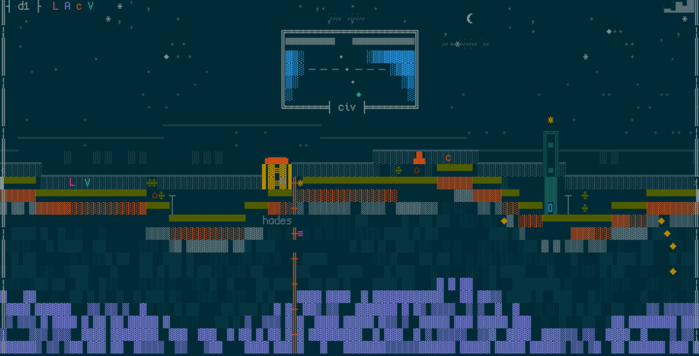
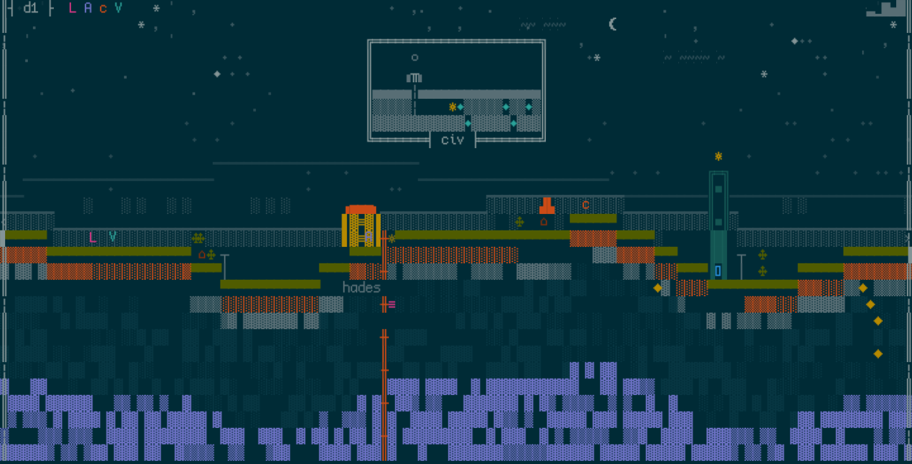
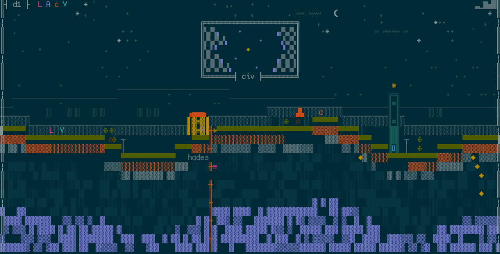
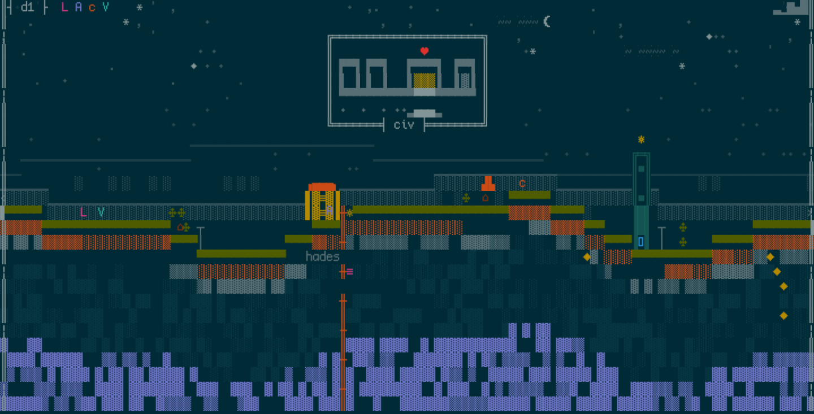

2026-08-23 · claude-authoring rung 1, taste bar 4b (the rung's last bar) ·
four murals, four library summaries, shuffled independently. Which mural belongs to which library
is sealed in 2026-08-23-mural-matching.key.md: answer first, open it after.




Behavioral profile: - Total owned games: 9 - Total playtime: 406.7h - Top 9 by playtime: - Hollow Knight — 103.3h played, completion fraction 3.9, (past main, ongoing) - Hades — 96.7h played, completion fraction 4.5, (past main, ongoing) - Sekiro: Shadows Die Twice — 78.3h played, completion fraction 2.6, (past main, ongoing) - Celeste — 48.3h played, completion fraction 6.0, (deeply lived-in) - Dead Cells — 35h played, completion fraction 2.4, (past main, ongoing) - Slay the Spire — 30h played, completion fraction 1.3, (past main, ongoing) - Ori and the Will of the Wisps — 15h played, completion fraction 1.3, (past main, ongoing) - Cuphead — 0h played, (unplayed) - Blasphemous — 0h played, (unplayed) - Avg achievement completion (top-N): 81.4% — a finisher - Binge ratio: high (top 3 games = 68% of total playtime) - Recent activity: none of the top games played in the last week - Dusty backlog (owned, never opened): 2 titles - Library states: 5 mastered
Behavioral profile: - Total owned games: 8 - Total playtime: 100.8h - Top 8 by playtime: - Stardew Valley — 56.7h played, completion fraction 1.1, (past main, ongoing), played recently - Spiritfarer — 18.3h played, completion fraction 0.8, (engaged but unfinished), played recently - Dorfromantik — 11.7h played, completion fraction 1.0, (engaged but unfinished) - Coffee Talk — 6.7h played, completion fraction 1.5, (past main, ongoing), played recently - Unpacking — 5h played, completion fraction 1.1, (past main, ongoing), played recently - A Short Hike — 2.5h played, completion fraction 1.7, (past main, ongoing), played recently - Garden Story — 0h played, (unplayed) - Cozy Grove — 0h played, (unplayed) - Avg achievement completion (top-N): 44.3% — mixed - Binge ratio: very high (top 3 games = 86% of total playtime) - Recent activity: 5 of top 8 played in the last week - Dusty backlog (owned, never opened): 2 titles - Library states: 1 loved, 4 recently played
Behavioral profile: - Total owned games: 17 - Total playtime: 14h - Top 15 by playtime: - Vampire Survivors — 8h played, completion fraction 0.4, (engaged but unfinished) - DAVE THE DIVER — 6h played, completion fraction 0.2, (tried) - Deep Rock Galactic — 0h played, (unplayed) - Terraria — 0h played, (unplayed) - RimWorld — 0h played, (unplayed) - DOOM — 0h played, (unplayed) - Ori and the Blind Forest — 0h played, (unplayed) - Katana ZERO — 0h played, (unplayed) - Noita — 0h played, (unplayed) - Loop Hero — 0h played, (unplayed) - Darkest Dungeon — 0h played, (unplayed) - Risk of Rain 2 — 0h played, (unplayed) - Hotline Miami — 0h played, (unplayed) - FTL: Faster Than Light — 0h played, (unplayed) - Into the Breach — 0h played, (unplayed) - Avg achievement completion (top-N): 18% — a sampler - Binge ratio: very high (top 3 games = 100% of total playtime) - Recent activity: none of the top games played in the last week - Dusty backlog (owned, never opened): 15 titles
Behavioral profile: - Total owned games: 5 - Total playtime: 11.9h - Top 5 by playtime: - Deep Rock Galactic — 4.5h played, (tried) - No Man's Sky — 4.3h played, (tried) - Counter-Strike 2 — 1.3h played, (just opened) - Apex Legends — 1h played, (just opened) - Call of Duty® — 0.8h played, (just opened) - Binge ratio: very high (top 3 games = 85% of total playtime) - Recent activity: none of the top games played in the last week - Dusty backlog (owned, never opened): 0 titles - Library states: 4 abandoned partway
Answer with four pairs (for example: 1-A, 2-B, 3-C, 4-D), then open the key.